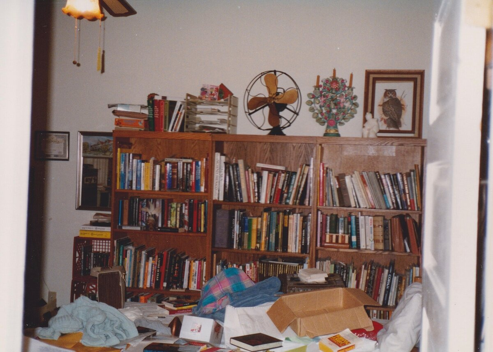
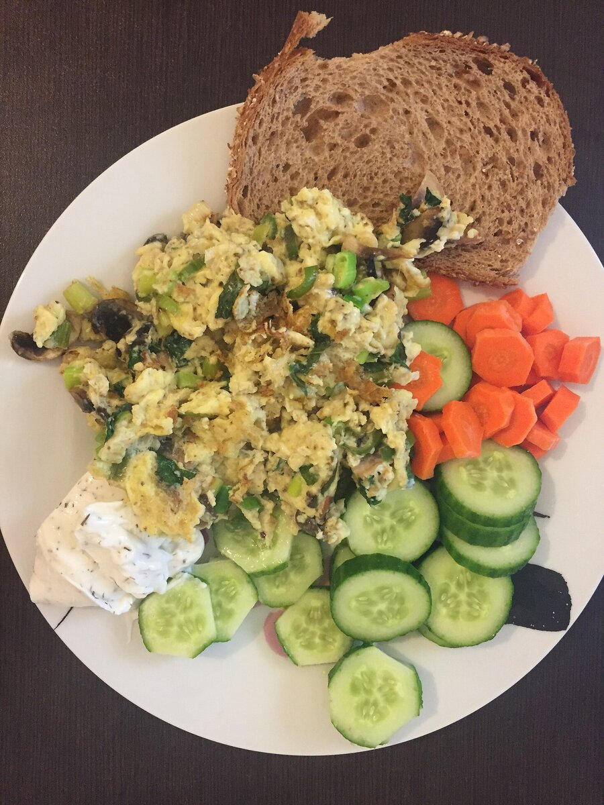

B2 · Everyday Life
A Morning at Home
Tidying a room, cooking breakfast and debugging code — forty phrasal verbs doing ordinary work.
Play the audio and follow along, then read it again on your own. Tap or hover over a highlighted word to see what it means.
John decided to clean up his bedroom. He started by picking up his clothes from the floor and putting them away in the closet. Then he made up his bed, straightening out the sheets and fluffing up the pillows. He noticed some books scattered across the floor, so he picked those up too and put them back on the shelf. Next he dusted off his desk and wiped down the surfaces. With everything in order, he decided to lie down for a few minutes.


While he was lying there, John remembered the coding project he still had to finish. He got up, sat down at his desk and booted up his computer. There was a bug that had been causing problems in the system for two days. After looking through the code for a while, he managed to figure out what was wrong: a variable was being read before it had been set. He fixed up the error and ran the program again, and this time everything worked.
Feeling pleased with himself, John decided to take a break. He stood up, stretched out, and walked over to the kitchen to see what Maria was doing.
Maria had come into the kitchen to whip up some breakfast. She started by taking out the ingredients from the fridge. Once she had everything, she turned on the stove and began to heat up the pan. She chopped up some vegetables and threw them in to sauté. While they were cooking, she cracked open a few eggs and whisked them up. When the vegetables were ready, she poured in the eggs and stirred them around until they had set. After they had eaten, she cleaned up the kitchen, wiping down the counters and putting away the dishes.


Then Maria sat down at her laptop at the kitchen table. She was working on a new feature for a web application and needed to write up some fresh code. She logged in to her development environment and started typing out the function. It meant setting up a few new variables and calling out to some API functions, and she also had to comment out several lines of the old code that were no longer needed.
Just as she was about to run the application and test the new feature, John came back in. “Hey, how's it going?” he asked.
“Good,” Maria said. “I just need to test out this new code.”
John pulled up a chair and sat down beside her. “Mind if I look over it with you?”
“Not at all,” she said. They went over the code together, checking that everything held up. Maria had missed one condition; John spotted it, they patched it, and on the next run the application worked exactly as it should.
“Nice work,” John said.
“Thanks. Now let's shut down these computers and head out for a walk. We've earned it.”
Key Vocabulary
- to straighten out to make something flat, tidy or orderly
- to fluff up to shake or pat something soft so it becomes fuller
- to dust off to remove dust from a surface
- to wipe down to clean a surface by rubbing it with a cloth
- to boot up to start a computer
- to figure out to work out the answer to something
- to fix up to repair or put right
- to stretch out to extend your body to its full length
- to whip up to make something, usually food, quickly
- to chop up to cut something into pieces
- to crack open to break something open, especially an egg
- to whisk up to beat something quickly with a light, circular motion
- to write up to produce a finished written version of something
- to type out to write something at a keyboard, in full
- to set up to prepare or arrange something so it is ready to use
- to comment out to disable a line of code by turning it into a comment rather than deleting it
- to pull up to bring something, especially a chair, nearer
- to look over to examine something without studying every detail
- to go over to examine something carefully, from beginning to end
- to hold up to stay correct or sound under examination
- to shut down to turn a computer or machine off completely
- to head out to leave, to set off somewhere
A Morning at Home — B2 · Everyday Life · Renan the Teacher, English Language Academy · https://renangrossi.github.io/englishclasses/reading/b2/phrasal-verbs-01-bed-and-breakfast.html
Interactive Exercises
Practice
Complete each exercise, then click Submit to see your score and an explanation for every answer.
Speaking & Writing
Discussion
There are no right answers here — use these to practice speaking, or write a short answer to each.
- Describe your own morning routine using at least six phrasal verbs from this text.
- John reviews Maria's code and finds a mistake she missed. Why is it easier to spot errors in someone else's work than in your own?
- Do phrasal verbs make English harder or more natural to speak? Give an example that has caused you trouble.
- Pick five phrasal verbs from the list and say what the single-word equivalent would be. Which version sounds more formal?
- Write about 150 words describing how you prepare a meal you know well, using phrasal verbs throughout.